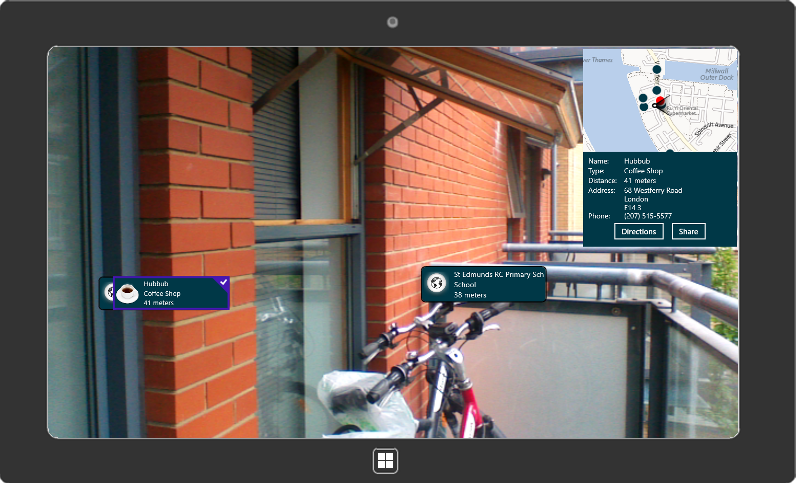
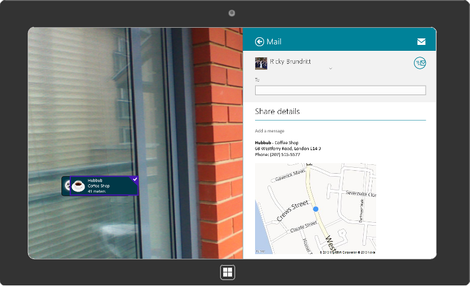
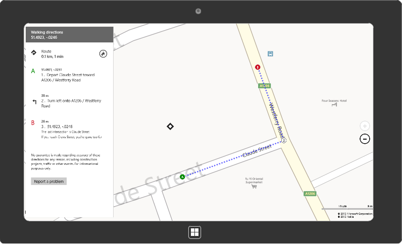

This sample shows how to create an augmented reality application for Windows 8 and Windows Phone 8 that makes use of Bing Maps. The point of interest data being used in the app is being pulled from the NAVTEQ point of interest data sources in the Bing Spatial
Data Services. You can create your own data sources in the Bing Spatial Data Services and easily modify this application to use your data instead.
In addition to showing nearby points of interest you can also generate driving directions, and share them. When the directions button is selected the Maps app in Windows 8 is launched and preconfigured to display walking directions from your current location
to the selected point of interest location. When sharing a point of interest the generated email includes the details of the selected location along with a static map image of where the item is located. The static map image is generated using the Bing Maps
REST Imagery Service.
This project is built on top of an open source project called
GART which stands for Geo AR Toolkit. GART was originally created to make it easy to build location based augmented reality apps for Windows Phone and is now has support for Windows 8 as well. Note that a rear facing camera is required for this application
as the user experience consists of looking at the screen while pointing the back of the screen in the direction you want to view.
• Windows 8
• Visual Studios 2012
• Bing Maps for Windows Store Apps SDK
• Orientation Sensor
• Location Sensor
• Rear Facing Camera (Optional but recommended)
To run this sample you must install the Bing Maps SDK for Windows Store apps and get a Bing Maps key for Windows Store apps. You must also have Windows 8 and Visual Studio 2012.
Open the sample in Visual Studio and insert your Bing Maps key in the App.xaml file in the BingMapsAR project where it says “YOUR_BING_MAPS_KEY” in the source code. You must perform the following steps for your app project to work correctly with Bing Maps. Detailed instructions are provided below.
Since this sample app makes use of data stored in the
Bing Spatial Data Services you can create your own data source to create a custom augmented reality app. You can find information on how to create and upload your own data source to the Bing Spatial Data Services
here.
Once you have a data source uploaded to the Bing Spatial Data Services you can modify the
BingMapsAR project to make use of your data. The first step is to update the
PoiItem.cs file which is located in the Models
folder. This file describes the format of the data in your data source. Simply add and remove properties such that they match the column header names and types in your data source. Next open the
MainPage.xaml.cs file and find the ARDisplay_LocationChanged
event handler. In this event handler is some logic for switching between the NAVTEQ NA and EU data sources based on where the user is. Remove this logic and set the
baseURL value to the query URL of your data source. Details on how to find the query URL of your data source can be found
here. Once you have done this you can customize what information is being displayed to the user by changing the properties being bound in the
ItemPanel and PoiItem DataTemplate in the MainPage.xaml
file.
Note that there are limits on how large and how many data sources you can have in a Bing Maps account. These limits are documented
here.


